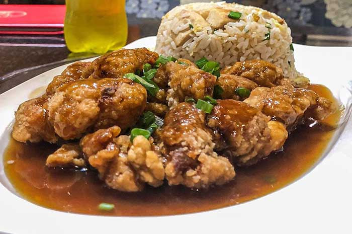

Chijaukay

Chi Jau Kay o Chijaukay (Kay which means hen) is one of the most popular Peruvian dishes in the entire territory. It is carried out together with the boiled sauce which is spectacular to the delight of the palates
Ingredients
For the chicken chi jau kay:
- 3 chicken thighs Sofia
- 1 1 cm ginger cube
- 1 clove of garlic
- Sprigs of chives
- 2 cups cornstarch
- 2 eggs
- 2 cups of water
For the chi jau kay sauce:
- 2 tablespoons soy sauce
- tbsp hoisin sauce
- 2 tablespoons oyster sauce
- 1 tbsp sesame oil
- 1 tbsp cornflour
Preparation
- Bring the water to a pot and add the garlic, ginger and spring onion and bring to the boil over medium heat.
- Once it starts to boil add the Sofia boneless chicken thighs and let it cook for 5 min
- After this time, remove the thighs and strain and reserve ¾ cups of the cooking liquid
- For the chi jau kay sauce, pour the oyster sauce, hoisin sauce, soy sauce, sesame oil and the reserved chicken stock into a pot, then dilute the cornstarch in two tablespoons of water and add it to the mixture
- Once it has thickened, remove from the heat and set aside
- Finally, pour the salt and pepper over the cornflour and mix
- Next, coat the previously cooked thighs in the beaten egg so that they are well coated and then in the seasoned cornflour mixture, shake off the excess and fry
- Fry each thigh piece for 3 minutes on each side and remove
- Then cut the thighs into 3 slices and cut in half, serve with the delicious chi jau kay sauce
Home